Why?
|
I always been curious about where people are going. A test bed for data science ideas. ... It is out there... why not use it? |

|
|
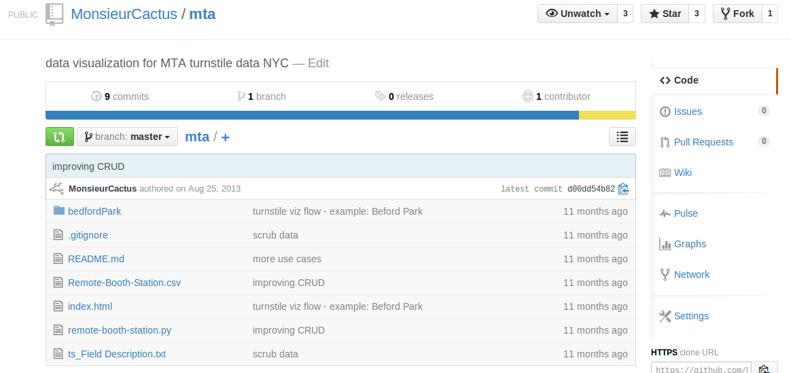 |
Every week MTA publishes turnstile data.
This is a lot of information about:
|
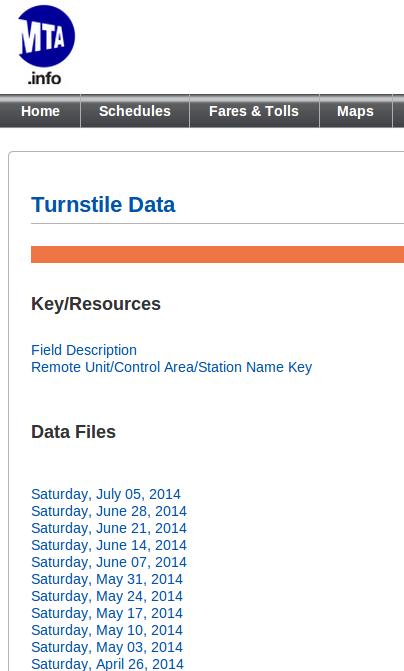 |
|
I always been curious about where people are going. A test bed for data science ideas. ... It is out there... why not use it? |
|
|
It is your city You ride the Subway everyday Businesses influenced by relation to Subway Validate claims about congestion etc... (think of new 2nd Avenue Line) There should be signals in the MTA data -- insert your idea -- |
| 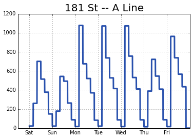 |
|
| 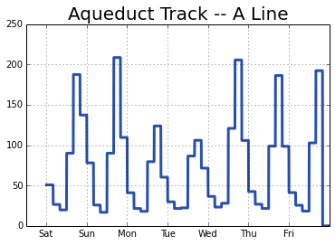 |
Here is the first row of turnstile data:
['A002', 'R051', '02-00-00', '06-14-14', '00:00:00', 'REGULAR',
'004658374', '001585076', '06-14-14', '04:00:00', 'REGULAR', '004658428',
'001585080', '06-14-14', '08:00:00', 'REGULAR', '004658445', '001585101',
'06-14-14', '12:00:00', 'REGULAR', '004658555', '001585156', '06-14-14',
'16:00:00', 'REGULAR', '004658792', '001585215', '06-14-14', '20:00:00',
'REGULAR', '004659129', '001585268', '06-15-14', '00:00:00', 'REGULAR',
'004659301', '001585327', '06-15-14', '04:00:00', 'REGULAR', '004659332', '001585335']Any ideas?
REGULAR
06-14-14 which is to say June 14, 2014
A002 and R051?
02-00-00 mean?
Field Description
C/A,UNIT,SCP,
DATE1,TIME1,DESC1,ENTRIES1,EXITS1,
DATE2,TIME2,DESC2,ENTRIES2,EXITS2,
DATE3,TIME3,DESC3,ENTRIES3,EXITS3,
DATE4,TIME4,DESC4,ENTRIES4,EXITS4,
DATE5,TIME5,DESC5,ENTRIES5,EXITS5,
DATE6,TIME6,DESC6,ENTRIES6,EXITS6,
DATE7,TIME7,DESC7,ENTRIES7,EXITS7,
DATE8,TIME8,DESC8,ENTRIES8,EXITS8
C/A = Control Area (A002)
UNIT = Remote Unit for a station (R051)
SCP = Subunit Channel Position represents an specific address for a device (02-00-00)
DATEn = Represents the date (MM-DD-YY)
TIMEn = Represents the time (hh:mm:ss) for a scheduled audit event
DEScn = Represent the "REGULAR" scheduled audit event (occurs every 4 hours)
ENTRIESn = The comulative entry register value for a device
EXISTn = The cumulative exit register value for a deviceHere is the first row of turnstile data:
['A002', 'R051', '02-00-00',
'06-14-14', '00:00:00', 'REGULAR', '004658374', '001585076',
'06-14-14', '04:00:00', 'REGULAR', '004658428', '001585080',
'06-14-14', '08:00:00', 'REGULAR', '004658445', '001585101',
'06-14-14', '12:00:00', 'REGULAR', '004658555', '001585156',
'06-14-14', '16:00:00', 'REGULAR', '004658792', '001585215',
'06-14-14', '20:00:00', 'REGULAR', '004659129', '001585268',
'06-15-14', '00:00:00', 'REGULAR', '004659301', '001585327',
'06-15-14', '04:00:00', 'REGULAR', '004659332', '001585335']Strategy for reading data:
Let's do a little Python. Use csv library:
with open('turnstile_140621.txt', 'rb') as csvfile:
subwayReader = csv.reader(csvfile, delimiter=',', quotechar='"')
data = [row for row in subwayReader]
print len(data)Answer is: 29284. Slightly less than thirty thousand lines each week.
Fits into memory! All of NYC - one week.
Python didn't break.
Even 1 year of data 52 × 20MB = 1GB can save to a flash drive. So far so good.
Let's analyze station R195: it happens to be Yankee Stadium
sta = 'R195'
oneStation = [d for d in data if d[1]==sta]
Y = []
for x in oneStation:
Y += x[3:]
for t in range(len(Y)/5):
print [Y[5*t + k] for k in range(5)]We get promising-looking data pertaining to one train station.
['06-14-14', '00:00:00', 'REGULAR', '003233068', '003432268']
['06-14-14', '04:00:00', 'REGULAR', '003233088', '003432274']
['06-14-14', '04:00:00', 'RECOVR AUD', '003233088', '003432274']
['06-14-14', '08:00:00', 'REGULAR', '003233097', '003432316']
['06-14-14', '12:00:00', 'REGULAR', '003233125', '003432377']
['06-14-14', '16:00:00', 'REGULAR', '003233164', '003432442']
['06-14-14', '20:00:00', 'REGULAR', '003233224', '003432497']
['06-15-14', '00:00:00', 'REGULAR', '003233252', '003432533']
...
['06-20-14', '17:00:00', 'REGULAR', '001421250', '001114228']
['06-20-14', '21:00:00', 'REGULAR', '001421423', '001114529']
['06-14-14', '01:00:00', 'REGULAR', '002847629', '001416722']
['06-14-14', '05:00:00', 'REGULAR', '002847639', '001416727']
Unfortunately the dates start repeating themselves.
Let's analyze station R195: it happens to be Yankee Stadium
sta = 'R195'
oneStation = [d for d in data if d[1]==sta]
Y = []
for x in oneStation:
Y += x[3:]
for t in range(len(Y)/5):
print [Y[5*t + k] for k in range(5)]Statuses can get quite irregular. This is going to kick our butt.
['06-16-14', '09:00:00', 'REGULAR', '001417719', '001110223']
['06-16-14', '12:08:32', 'DOOR OPEN', '001417832', '001110306']
['06-16-14', '12:08:57', 'DOOR OPEN', '001417832', '001110306']
['06-16-14', '12:11:32', 'LOGON', '001417832', '001110306']
['06-16-14', '12:11:49', 'DOOR CLOSE','001417832', '001110306']
['06-16-14', '12:11:50', 'DOOR OPEN', '001417832', '001110306']
['06-16-14', '12:20:22', 'LOGON', '001417832', '001110306']
['06-16-14', '12:20:27', 'DOOR CLOSE','001417832', '001110306']
['06-16-14', '12:20:28', 'DOOR OPEN', '001417832', '001110306']
['06-16-14', '12:28:09', 'DOOR OPEN', '001417832', '001110306']
['06-16-14', '12:29:51', 'LOGON', '001417832', '001110306']
Our analysis needs to exclude these quirky statuses like
DOOR CLOSE,
DOOR OPEN, and
LOGON,.
Let's analyze station R113: it happens to be 7 AVE-53 ST
sta = 'R113'
oneStation = [d for d in data if d[1]==sta]
Y = []
for x in oneStation:
Y += x[3:]
for t in range(len(Y)/5):
print [Y[5*t + k] for k in range(5)]Status is completely regular, data collected every 4 hours.
['06-14-14', '01:00:00', 'REGULAR', '000006932', '000016621']
['06-14-14', '05:00:00', 'REGULAR', '000006940', '000016632']
['06-14-14', '09:00:00', 'REGULAR', '000006955', '000016691']
['06-14-14', '13:00:00', 'REGULAR', '000007024', '000016857']
['06-14-14', '17:00:00', 'REGULAR', '000007101', '000017106']
['06-14-14', '21:00:00', 'REGULAR', '000007171', '000017378']
['06-15-14', '01:00:00', 'REGULAR', '000007214', '000017490']
Instead of reading at 0:00,4:00,8:00,12:00,16:00,20:00 we get readings one hour off
1:00,5:00,9:00,13:00,17:00,21:00.
Finally, remember we can only get 6 readings each day. For the number of visitors between 7:00AM and
8:00AM we have to guess.
Sometimes... *ALWAYS* not enough information - not the right kind - etc.
Interpolation is about reading in between the lines.
We found out the MTA data set is not normalized. Data collected every 4 hours... a different 4 hours for each train station.
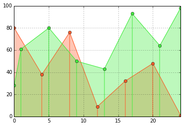Part of the look-up table provided by MTA.
|
|
No way to separate uptown and downtown traffic
I think the solution is to curate the train stations by hand. Easy: only 500 of them!
|
|
|
We munge station meta-data into the format of our own choosing.
Matter is neither created nor destroyed, however...
| Entrances | Exits | Entrances - Exits |
|---|---|---|
| 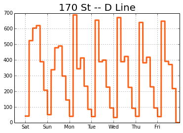 | 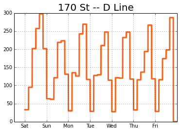 | 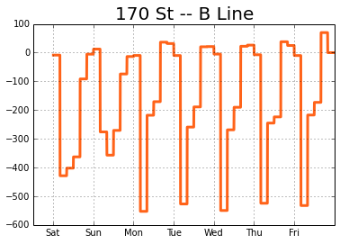 |
We learn that commuters often return to a different station than home.
Baseball games draw about 4000 people to 161st Yankee Stadium via Subway.
In fact this number might be too low if people leave through the door.
| Entrances | Exits | Entrances - Exits |
|---|---|---|
| 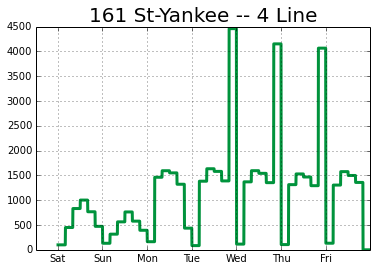 | 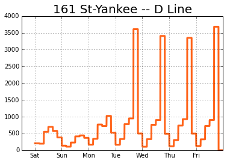 |  |
Game day makes a huge difference.
Here's a crash-course in scikit-learn k-means clustering. This is an unsupervised learning algorithm, since we don't know what groups we should get ahead of time.
from sklearn.cluster import KMeans
kmeans = KMeans(init='k-means++', n_clusters=10, n_init=20)
# ALL STATIONS ON #4 LINE
X = [sta for sta in stations if '4' in sta[3] and sta[4] != 'PTH']
X = list(set([y[0] for y in X]))
# TURNSTILE DATA FOR EACH STATION
Z = []
for x in X:
y = f(x)['in'][::10]
Z += [y-y[0]]
# CLUSTERING
clusters = kmeans.fit_predict(Z)
Look at a print-out of the clusters.
| |
|
Do you buy these results? You shouldn't! :-P
Let's plot the clusters we found to make sure they are reasonable.
| 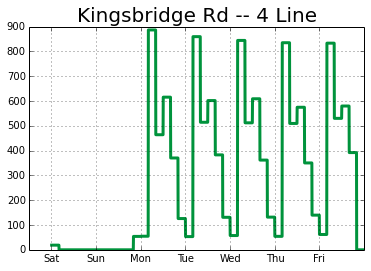 |  |
Anyone who lives in Bronx knows they two stations are adjacent and basically them same. In fact, they physically merge.
Why is there no data for weekends??
Let's plot the clusters we found to make sure they are reasonable.
| 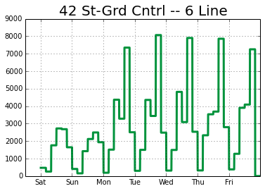 | 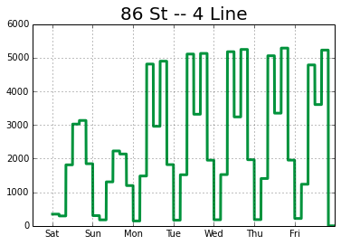 |
While obviously not the same, data suggests 86st and 42nd Grand Central have similar characteristics.
| 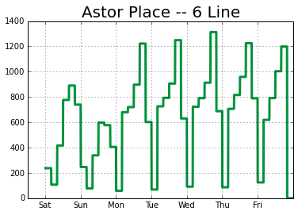 | 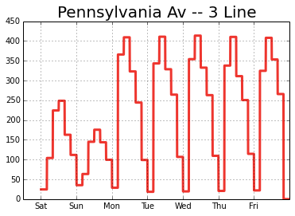 | 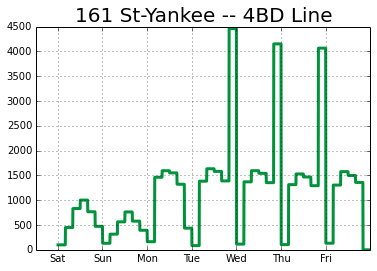 | 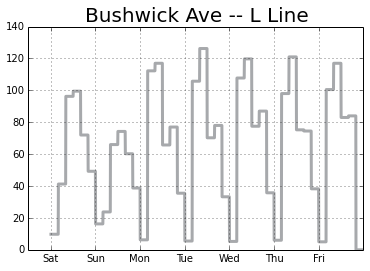 |
| 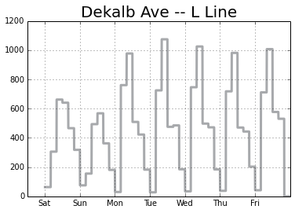 | 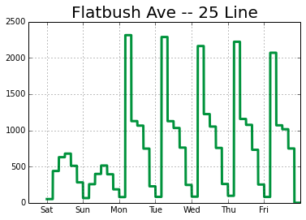 | 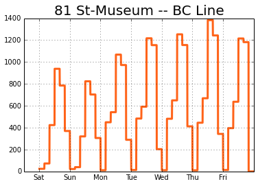 | 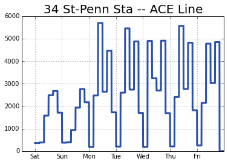 |
| 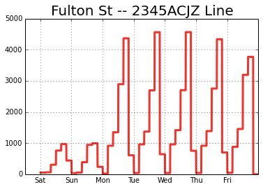 | 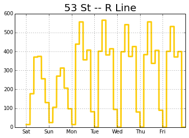 | 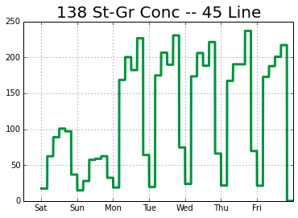 | 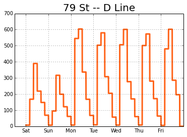 |
| 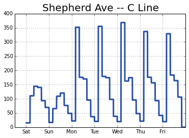 | 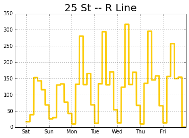 | 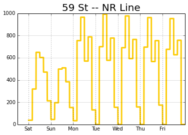 | 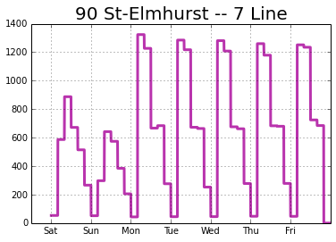 |